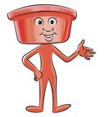

Page 6
I am a piece of cotton cloth, I clean your nose.
I am a basin, use me to keep water.

I am a mug, use me to fetch water.
I am a piece of cotton cloth, I clean your nose.
I am a basin, use me to keep water.

I am a mug, use me to fetch water.